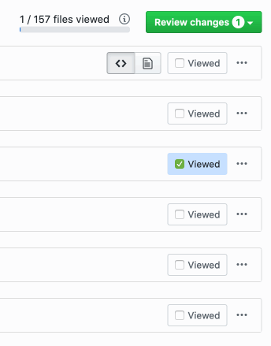
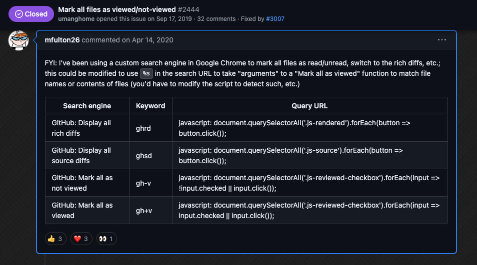

Random GitHub notes¶
Marking all PR files as viewed using Refined GitHub¶
If you use refined-github, you can batch mark files as viewed by using Shift + click, as shown in refined-github#3007:

The sequence is: 1. Click on first item 2. Hold shift 3. Click on other item 4. Release shift
Note: Steps 2-4 can be repeated to continue the selection
Related issues¶
- https://github.com/refined-github/refined-github/issues/2444
- https://github.com/refined-github/refined-github/issues/5880
Marking all PR files as viewed in the GitHub Web UI¶
The "marking all files as viewed" might be fixed in https://github.com/refined-github/refined-github/issues/3043
From https://github.com/refined-github/refined-github/issues/2444#issuecomment-613557336
FYI: I've been using a custom search engine in Google Chrome to mark all files as read/unread, switch to the rich diffs, etc.; this could be modified to use
%sin the search URL to take "arguments" to a "Mark all as viewed" function to match file names or contents of files (you'd have to modify the script to detect such, etc.)
| Search engine | Keyword | Query URL |
|---|---|---|
| GitHub: Display all rich diffs | ghrd | javascript: document.querySelectorAll('.js-rendered').forEach(button => button.click()); |
| GitHub: Display all source diffs | ghsd | javascript: document.querySelectorAll('.js-source').forEach(button => button.click()); |
| GitHub: Mark all as not viewed | gh-v | javascript: document.querySelectorAll('.js-reviewed-checkbox').forEach(input => !input.checked \|\| input.click()); |
| GitHub: Mark all as viewed | gh+v | javascript: document.querySelectorAll('.js-reviewed-checkbox').forEach(input => input.checked \|\| input.click()); |
Originally posted by @mfulton26 in https://github.com/refined-github/refined-github/issues/2444#issuecomment-613557336
screenshot¶

Managing GitHub Secrets in multiple repos¶
Managing GitHub Secrets with the GitHub CLI¶
GitHub CLI docs:
- https://cli.github.com/manual/gh_secret
- https://cli.github.com/manual/gh_secret_list
- https://cli.github.com/manual/gh_secret_set
- https://cli.github.com/manual/gh_secret_delete
Listing secrets¶
List secret keys for the current repository:
List secret keys for a specific organization:
List secret keys for a specific repository:
Setting secrets¶
Set a secret for the current repository (user will be prompted for the value):
Set a secret from a file for the current repository:
Set an organization secret for specific repositories:
Removing secrets¶
Remove a secret for the current repository:
Remove a secret for a specific organization:
Using bash to update repos in bulk¶
typeset -A myRepos=("rwaight/actions" "rwaight/test-actions" "rwaight/rwaight.github.io")
typeset -A myRepos=(
[0]="rwaight/actions"
[1]="rwaight/test-actions"
[2]="rwaight/rwaight.github.io"
)
for str in "${myRepos[@]}"; do echo "the repo is $str "; done
#secretName="SECRET_NAME_HERE"
#tempSecretNameValue="VALUE_FOR_SECRET_HERE"
typeset -A myRepos=(
[0]="actions"
[1]="test-actions"
[2]="rwaight.github.io"
)
for i in "${myRepos[@]}"; do echo "the repo is rwaight/$i "; done
## now loop through the above array
for repo in "${myRepos[@]}"
do
#echo "updating secret ${secretName} in repo ${repo}"
# or do whatever with individual element of the array
#gh secret set ${secretName} --repo ${repo} --body "${tempSecretNameValue}"
#
echo "updating secrets in repo ${repo} using the .env file "
# use the '.env' file instead
gh secret set -f .env --repo ${repo}
done
Managing GitHub Secrets with GitHub Actions¶
To add a GitHub secret to another repository using GitHub Actions, you'll need to follow these steps:
- Create a secret in the source repository: Go to your source repository's Settings > Secrets > Actions and create a new secret with a name and value. This secret will be used to authenticate and authorize the addition of the target repository's secret.
-
Use the
ghCLI command: In your GitHub Actions workflow, use theghCLI command to list the secrets in the target repository. You can do this using the following syntax:Replace- name: List secrets in target repository run: | gh secret list --repo <target-repo-owner>/<target-repo-name><target-repo-owner>and<target-repo-name>with the actual owner and name of the target repository. -
Add the secret to the target repository: Use the
ghCLI command again to add the secret to the target repository. You'll need to specify the secret name, value, and repository owner/name. Here's an example:Replace- name: Add secret to target repository run: | gh secret set --repo <target-repo-owner>/<target-repo-name> --name <secret-name> --value <secret-value><secret-name>and<secret-value>with the actual name and value of the secret you created in step 1. -
Authorize the addition using the source repository's secret: To authenticate and authorize the addition of the target repository's secret, you'll need to pass the source repository's secret as an environment variable or as a workflow input. For example:
Make sure to replace- name: Add secret to target repository (authorized) env: SOURCE_REPO_SECRET: ${{ secrets.SOURCE_REPO_SECRET }} run: | gh secret set --repo <target-repo-owner>/<target-repo-name> --name <secret-name> --value <secret-value> --auth-token $SOURCE_REPO_SECRETSOURCE_REPO_SECRETwith the actual name of the secret you created in step 1. -
Verify the secret addition: After running the workflow, verify that the secret has been successfully added to the target repository by checking the repository's settings or using the
ghCLI command again.
Important notes:
- Make sure you have the necessary permissions to access and modify secrets in both the source and target repositories.
- Be cautious when handling sensitive information, such as secrets, in your GitHub Actions workflows.
- Consider using a more secure approach, such as using an environment variable or a secure storage service, to store and retrieve secrets instead of hardcoding them in your workflow.
By following these steps, you should be able to add a GitHub secret to another repository using GitHub Actions.
Sources¶
- https://docs.github.com/en/rest/actions/secrets
- https://commandmasters.com/commands/gh-secret-common/
- https://www.thegeekdiary.com/gh-secret-manage-github-secrets-from-the-command-line/
- https://search.brave.com/search?q=github+actions+add+github+secret+to+another+repo&source=desktop&summary=1&summary_og=435276404feb91a25d24ce&conversation=32051c881907ea91873353
- https://octopus.com/blog/githubactions-secrets
- https://stackoverflow.com/questions/73667886/how-read-the-secrets-from-another-repo-to-my-repo-using-github-actions
- https://kinsta.com/blog/github-actions-secret/
- https://github.com/marketplace/actions/secrets-sync-action
- https://www.techielass.com/github-actions-secrets/